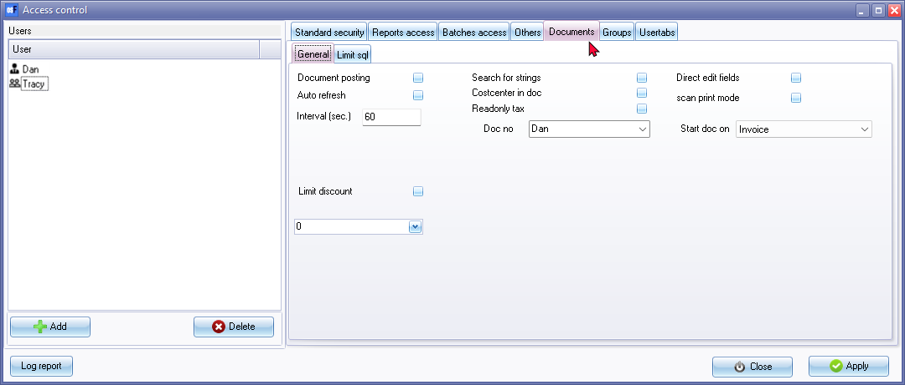
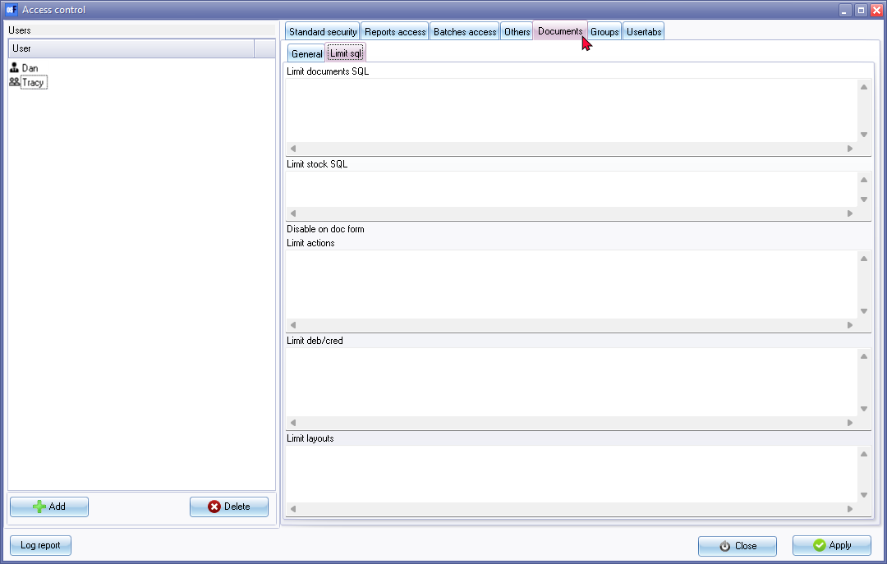

Access control - Documents tab
This option allows you to set variuos options for document processing. You may customise the access levels for each option by selecting or deselecting them based on your requirements.
For advances users, on the Limit sql tab, limitations for sql could be set for limit documents sql, limit stock sql, disable or limit actions on the document entry screen, limit debtors / creditors and limit layouts. To be advised.
To set documents access options for an user:
- On the Setup ribbon, click on the Setup → Access control menu. Then, navigate to the Documents tab.

- Selecting the user: Ensure that the correct user is selected for whom you want to restrict or allow configure document processing options. If needed, click on the User icon to select the desired user.
- LimitGeneral tab settings: Select the following options based on your requirements:
- Documents posting - By default, the Posting and Delete buttons are not available on the Document list screen. Selecting this option allows the user to have access to the Posting and Delete buttons on the Document list screen, enabling them to delete or update (post) documents to the ledger.
|
|
It's important to note that for the Quotes and Orders document types, the behaviour of the "Posting" button changes. Instead of being labelled as "Posting," it is labelled as "Confirmation." This is because quotes and orders cannot be directly posted or updated to the ledger. They need to be confirmed and converted to invoices (for quotes) or purchases (for orders) before they can be posted. |

- Auto refresh - To be advised.
- Interval (sec.) - To be advised.
- Search for strings - To be advised.
- Costcenter in doc - By default, the Cost centre feature is not activated for Documents. By selecting this option, you activate the Cost Centre feature for documents. This allows the user to select cost centres when processing sales documents (invoices, credit notes, and quotes) as well as purchase documents (purchases, supplier returns, and orders).
- Readonly tax - Set tax lookup On/Off - By default, the Tax accounts lookup is displayed when the cursor is in the Tax field of the Document line on the Document entry screen. If you want to deactivate this feature, select (tick) the "Tax Read-only" option.
- Doc no - Select the salesperson from the list. This will use the salesperson or user to generate document numbers when creating new documents.
Activate the General numbers option: Additionally, to enable the generation of document numbers based on general numbering rules, you can activate the "General numbers" option in the Setup → Documents setup menu on the Setup ribbon. This option allows you to configure specific numbering patterns and rules for document numbering.
- Direct edit fields - To be advised.
- scan print mode - To be advised.
- Start doc on - By default Invoice is selected and the Invoices document type will be launched when accessing Documents option on the Default ribbon. You may select to launch Quotes, Purchases or Orders document types as the default document type when accessing Documents option on the Default ribbon.
- Limit discount - This field you may set the values for the limitation of discount when processing documents. You may access the calculator function to perform calculations.
- Limit sgl tab settings: Click on the Limit sgl tab. To be advised.

- Set the SQL limitations: Within the "Limit sql" tab, you can configure limitations for document SQL, stock SQL, actions on the document entry screen, debtor/creditor limitations, and layouts. These limitations can be defined based on the user's specific requirements or security considerations.
|
|
Please note that the specific steps and options for setting these limitations may vary based on the version and configuration of osFinancials being used. It is recommended to refer to the osFinancials documentation or consult with the system administrator for detailed instructions on configuring SQL limitations in the application. |
- Applying changes: Click on the Apply button to save the changes for the selected user.
- Customising document options for other users: If necessary, select the next available user and configure their options in the same manner.
- Finalizing changes: Once you have finished setting the access levels for all desired users, click on the Close button to exit the "Access control" screen.